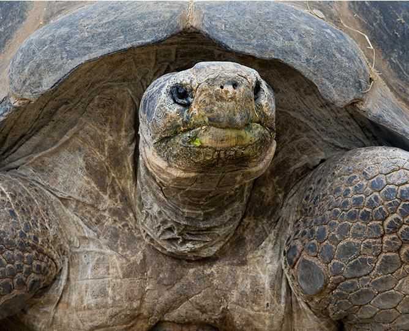

The harpy eagle is legendary, although few people have seen one in the wild. Fortunately, you can view one here at the Zoo! Named after harpies of Greek mythology, this dark gray bird of prey has a very distinctive look, with feathers atop its head that fan into a bold crest when the bird feels threatened. Some smaller gray feathers create a facial disk that may focus sound waves to improve the bird’s hearing, similar to owls. The harpy eagle's legs can be as thick as a small child's wrist, and its curved back talons are larger than grizzly bear claws! The harpy may not be the largest bird of prey (that title belongs to the Andean condor), but this extraordinary creature is the heaviest and most powerful of birds. View our harpy eagle and other raptors—the Steller’s sea-eagle, Andean condor, and ornate hawk-eagle—along the Eagle Trail.
What are gray wolves?
Wolves are legendary because of their spine-tingling howl, which they use to communicate. A lone wolf howls to attract the attention of his pack, while communal howls may send territorial messages from one pack to another. Some howls are confrontational. Much like barking domestic dogs, wolves may simply begin howling because a nearby wolf has already begun.The wolf (Canis lupus[a]), also known as the gray wolf or grey wolf, is a large canine native to Eurasia and North America. More than thirty subspecies of Canis lupus have been recognized, and gray wolves, as colloquially understood, comprise non-domestic/feral subspecies.The wolf is the largest extant member of Canidae, males averaging 40 kg (88 lb) and females 37 kg (82 lb). Wolves measure 105–160 cm (41–63 in) in length and 80–85 cm (31–33 in) at shoulder height. The wolf is also distinguished from other Canis species by its less pointed ears and muzzle, as well as a shorter torso and a longer tail. The wolf is nonetheless related closely enough to smaller Canis species, such as the coyote and the golden jackal, to produce fertile hybrids with them.

GALÁPAGOS TORTOISE
Some of the Zoo’s oldest—and slowest—residents are the Galápagos tortoises. Several have been with us since 1928, making them the oldest residents in the Zoo. We estimate their age to be well over 100! Numbers painted on each animal’s shell help us identify them: white-numbered tortoises are males, red numbers indicate females. Each tortoise has its own unique personality: some are shy, while others are more interactive with their keepers, stretching up for a neck rub or eating right out of their hand. These behemoths are attracted to the colors found in flowers, a favorite food—reds, yellows, pinks, and oranges. Try wearing your brightest clothing and see if you get the attention of a Galápagos tortoise!